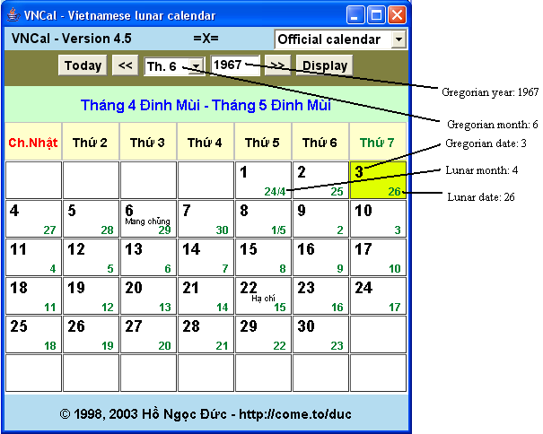

|
|
The applet displays a month of the Gregorian calendar
(dương lịch) with the corresponding dates of the lunar
calendar used in Vietnam (âm lịch). The calculations are carried out with the
algorithms described in the book Calendrical
Calculations by Edward M. Reingold and Nachum Dershowitz, adapted
for Hanoi time (GMT+7).
Cách tính âm lịch Việt Nam (in Vietnamese) |
Rules of Vietnamese lunar calendar (in English).
To print the calendar, please use the JavaScript version!
You can choose to display either the official or the astronomical Vietnamese lunar calendar. The official (historic) calendar ("lịch pháp định", "lịch lịch sử") shows the dates actually used in history. The astronomical (proleptic) lunar calendar is the modern calendar projected back to the past. That is, it is computed with modern rules also for times when those rules were not yet adapted. (The modern rules are adapted in the whole Vietnam in 1976, after the reunification). Since 1976 the two calendars are the same. The Vietnamese official calendar is reconstructed based on Hoang Xuan Han's investigations on Vietnamese calendars. It is more accurate for reading historical sources. The historic calendar is reliable for years since 1301.
When the applet is loaded it shows the current month. The current
day is displayed on a different background color. The lunar day is
printed in the lower right corner of the cell and its name is
printed below the table. Lunar leap months (tháng nhuận) are marked with an 'N', e.g., 12/2 N. The major and minor solar terms (tiết khí) are also indicated.
In history, sometimes the country was divided and different calendars were used in different regions. The historical calendar takes that fact into account and marks the dates where differences exist with a red X in the upper right corner. (See the historic calendar of 02/1968 for an example.) Between 1955 and 1975 the additional lunar day is the one according to the calendar used in South Vietnam. Between 1789 and 1802 the lunar date in square bracket (upper right) is the date of the calendar used by the Tay Son dynasty.
Initially the current day is selected. You can click on any other day to select it. When selected, detailed information about the date are displayed.
To display another month please select the month and the year. The
years BC must be entered as negative number, e.g., 2000 BC as
-1999. (There is no year 0 BC or 0 AD! Astronomical year 0 is year 1 BC). You can move to the previous or next month using the buttons labelled "<<" and ">>". To change back to the current day please click the button "Today". You can also use the "arrow keys" to move to another day; PgUp and PgDown to go to last/next month or the keys HOME/END to move to last/next year.
If you would like to calculate the lunar calendar
for another location, please replace the number 420 in the field "GMT +"
with the difference in minutes between that location
and GMT. For example, California is 8 hours behind GMT, so you would
enter the value -480 (= -8*60) in the field "GMT +". This feature is especially
useful for calculating historical Vietnamese calendar: in the past, sometimes
the calendar was calculated based on other time zones. (For example, GMT+480 min was used in South Vietnam until 1975 and in North Vietnam before 7/8/1967).
If you wonder how the Vietnamese lunar calendar can be calculated
for a date far in the future or back in the past, or why Vietnamese
New Year and Chinese New Year sometimes fall on different days, you
can find some explanations here. You will
find there also some links to more calendar resources and source code
for doing the required calculations.
Calendar conversion

From Gregorian date to lunar date
Let's assume we want to know what lunar date is June 3, 1967.
- Enter 1967 in the year field, select month 6 ("Th. 6") in the month list. The program displays the month June 1967.
- Look for cell showing day 3 (the bold number 3 in the upper left corner of the cell - highlighted in the picture). We see from the column header that it is Saturday (Thứ 7).
- The lunar date is shown in the lower right corner of the cell -- it is date 26.
- Now we need to know the lunar month. Normally only the lunar date is printed in the cell. The lunar month is only shown together with the lunar date when the solar or the lunar month starts, i.e., when solar or lunar date is 1. Knowing that, we go back some cells until we encounter a cell displaying both lunar date and month and see it is a cell with the lunar date 24/4 (June 1). Thus, the lunar month is 4.
Thus we have found out that June 3, 1967 corresponds to day 26, month 4 of the lunar calendar.
The lunar year is actually not numbered like in the Gregorian calendar. But for convenience we count the lunar year as follows: take the Gregorian year if the date is on or after the Lunar New Year (Têt) in that year, otherwise substract 1. Because the lunar month is greater than the solar month before Têt and less than the solar month after that, we can determine the lunar year as follows:
IF (Lunar month < Gregorian month) THEN (Lunar year = Gregorian year) ELSE (Lunar year = Gregorian year - 1)
In our example, lunar month (4) is less than Gregorian month (6), so the lunar year is the same as the Gregorian year. That is, June 3, 1967 Gregorian is April 26, 1967 according to the lunar calendar.
From lunat date to Gregorian date
We want to convert the lunar date 27/04/1967 to Gregorian date.
- First, we make a guess what Gregorian month may contain the given lunar date. We'll try a month and see if it contains the given lunar date. If not, go back for go forward one month until we find the desired lunar date. Because the Gregorian month is normally 1 or 2 months ahead of lunar month, we first try the Gregorian month (lunar month + 1), i.e., we look at the calendar for May 1967.
- Enter 1967 in the year field, select month 5 ("Th. 5") in the month list. The selected month is displayed.
- Looking at the lunar dates (in the lower right corner of the cells), we see that the first day of the month corresponds to lunar 22/3 and the last day is lunar 23/4. Our lunar date is out of that range, namely, it is after the last day. Thus, we move 1 month forward and look at June 1967.
- In the first cell of the month (June 1) the lunar date 24/4 is shown. Moving forward some cells we see that that 27/4 of the lunar calendar is June 4, 1967 (Gregorian).
So we found out that the lunar date 27/04/1967 is June 4, 1967 of the Gregorian calendar.
If we want to convert lunar dates at the end of the lunar year, use Gregorian month January of the next year as the first guess and move forward or backward as needed. In this way we can find that Feb 3, 1967 (Gregorian) is lunar 24/12/1966.
Lunar calendar calculations
The applet also calculates certain data for the Vietnamese
lunar calendar (a^m li.ch). (Click "Calendar Tool" to switch to the calculation tool.)
The following functions are supported:
- Show Solar Terms: calculates the Solar Terms (tie^'t khi') for the
given year. GMT times are shown. To convert to local time, add the difference between GMT and your time zone.
- Show New Moons: calculates the New Moons for the given year. GMT times are shown. To convert to local time, add the difference between GMT and your time zone.
- New Year's (Official): calculates for 100 years (starting with the given year) the New Year's days (Te^'t) according to the lunar calendar used officially in Vietnam.
- New Year's (Astronomical): calculates for 100 years (starting with the given year) the New Year's days (Tết) according to the (astronomical) lunar calendar computed for the given location.
- Leap Months (Official): calculates for 100 years (starting with the given year) all leap months (tha'ng nhuận) according to the lunar calendar used officially in Vietnam. (This takes some time.)
- Leap Months (Astronomical): calculates for 100 years (starting with the given year) all leap months (tha'ng nhua^.n) according to the (astronomical) lunar calendar computed for the given location. (This takes some time.)
- Sun Rise/Transit/Set: calculates the times of sunrise, transit ("Chính Ngọ") and sunset for the selected month and location. You can
select one of the given locations or specify your location manually.
Just select a function, enter the year and press "Compute".
Acknowledgements
I thank Edward M. Reingold and Nachum Dershowitz for their permission
to use their Calendrical Calculations Software Package in my
calculations. Thanks to all users who have commented on the software and
encouraged me to keep improving it.
Change log
- 03/2007: Add name of hour. Display data on a new screen
- 8/2006: some cached data corrected
- 5/2005: Fixed bug in displaying time of sunrise/sunset.
- 11/2004: Version 4.0 released. Complete redesign. Many bugs fixed.
- 9/2004: JavaScript lunar calendar released (valid 1800 - 2199)
- 7/2004: Display of major/minor solar terms for years before 1582 corrected.
- 5/2004: Minor corrections (date/time format, Full Moon indicator...)
- 4/2004: Some additional calculations available. Sunrise/transit/sunset moved to Calendar tool (from month display window).
- 3/2004: Fixed bug in LunarYear. Cached data for 900-1200 added. Calendar comparison for 1789-1802 (Tay Son-Nguyen) and 1955-1975 (Bac-Nam). Compute sunrise, sunset and transit (chính ngọ) for any location.
- 3/2004: True historical calendar added (version 3.0).
- 3/2004: Corrected calculation of leap month in 2033. Paper on calendar algorithms added.
- 10/2003: Added Rules for calculating Vietnamese lunar calendarin Vietnamese
- 10/2003: Windows executable (LunarCal.exe) available for download
- 9/2003: Add button "Today" to change back to current day
- 7/2003: show tru+.c of selected day and major and minor solar terms in the month. Merge 2 applets
- 5/2003: add times of sunrise/sunset in Hanoi, Hue, Saigon. Let user select time zone for computation. Added Lunar calendar for Palm and Lunar calendar for mobile phones.
- 5/2002: applet "Lunar calendar calculations" added
- 2/2002: full month display
- 8/2000: More accurate conversion with Calendrical Calculations Software Package
- 2/1998: Initial version (calendar conversion applet)
You can download the program to use offline. If you need a standalone EXE file for use on Windows
you can download LunarCal.exe (One possible use is to call the program and display the result in your own program).
Lunar calendar programs for handheld devices (mobile phones and Palm PDAs) can be downloaded from
my J2ME page.
Please send your comments, questions, suggestions, corrections to the author
Hồ Ngọc Đức. You can also share your opinion with other users using my guestbook.